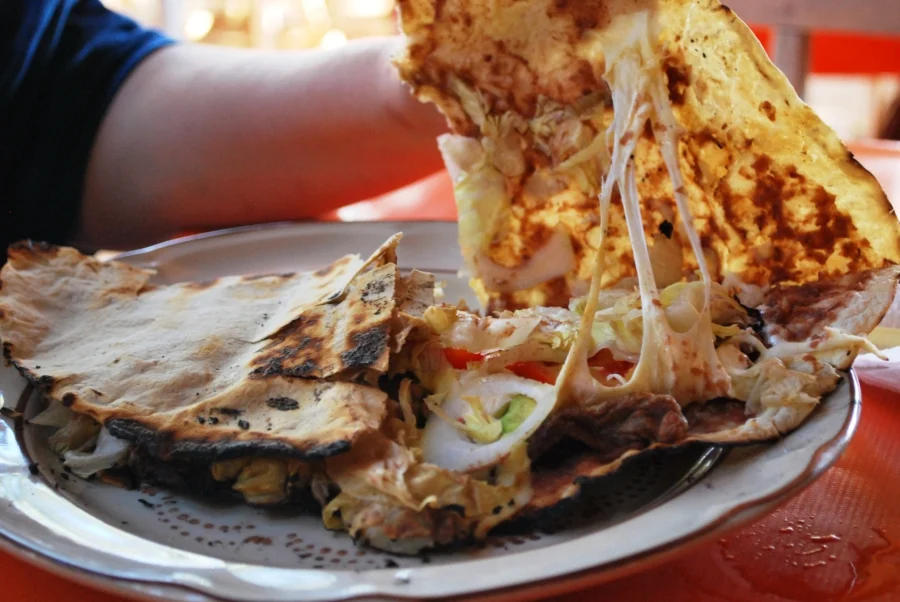
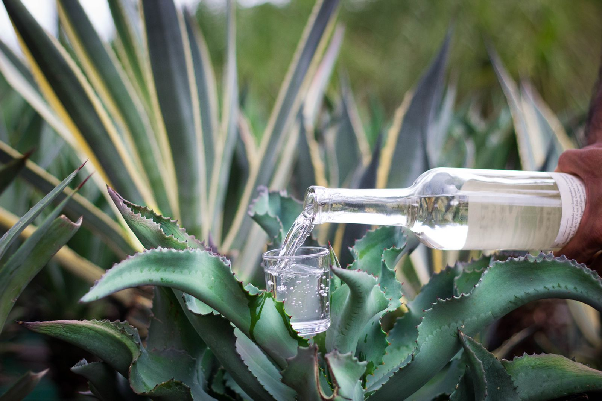

Gatronomia
Hablar de Oaxaca es hablar de un estado repleto de misticismo, tradiciones, cultura y por supuesto gastronomía.
Esta última, fue declarada por la UNESCO como Patrimonio cultural inmaterial de la humanidad desde el año 2010 y es por ello que en la actualidad se reconoce a nivel nacional e internacional.
Para adentrarnos a hablar sobre la importancia de la cultura gastronómica en Oaxaca es necesario empezar por la base, por el corazón, por la triada de ingredientes que dan origen a múltiples platillos: el maíz, chile y frijol.
Dichos ingredientes han estado presentes en la dieta de los oaxaqueños desde tiempos prehispánicos y han sufrido un gran número de cambios a lo largo del tiempo, a estos los complementan el tomate, la calabaza, y el cacao.
La perfecta alquimia de estos ingredientes con otros provenientes de distintas partes del mundo dan como resultado combinaciones únicas en sabor, aroma y color, como nuestros siete moles, los cuales toman sus nombres en base a los colores que surgen de esta como el mole negro, rojo, amarillo, verde y otros matices, son tan complejos que pueden variar en cuanto a nombres, ingredientes, sabores, aromas y texturas según la región donde se preparen.
Las bebidas tradicionales de Oaxaca al igual que sus platillos, son elaboradas con diversos propósitos religiosos o festivos en diferentes fechas del año y son también el maridaje perfecto de muchos de los platillos que se consumen en el estado, bebidas como el chocolate, el chocolate-atole, los atoles de diversos maíces con o sin chocolate e incluso con toques picantes no pueden faltar en los menús de las familias oaxaqueñas.
Los postres no se quedan atrás, en Oaxaca se asentaron diversos conventos en los que surgieron creaciones dulces únicas como las nieves de garrafa (elaboradas de sabores muy tradicionales como leche quemada con tuna) , los ricos dulces regionales (empanadas, barquillos, mamones, borrachitos, menguanitos y un sinfín de ellos), calabaza en tacha, arroz con leche, buñuelos y por supuesto el nicuatole, una gelatina prehispánica elaborada a base de atole de maíz espesado y cuajado que anteriormente era coloreado con grana cochinilla.
algunos platillos mas conocidos:
Tlayudas

Sin duda, uno de los platillos más destacados de Oaxaca es la tlayuda. Esta delicia tiene como base una tortilla de maíz que mide alrededor de 30 centímetros de diámetro y que posee una textura dorada.
A esta base se añaden diversos ingredientes como frijoles, tasajo, aguacate y col. A partir de esto se pueden hacer cambios o añadir chapulines, chicharrón, chorizo, queso e incluso camarones.
Chicatanas

Aunque su consumo no es tan común debido a su alto precio y a la dificultad para conseguirlas, las chicatanas son esos insectos que todos los mexicanos deberíamos probar por lo menos una vez en la vida. Su sabor es concentrado y crujiente, por lo que representa toda una experiencia bastante agradable.
Se trata de las hormigas hembra de las conocidas como «hormigas cortadoras de hojas» u «hormigas arrieras». Éstas se pueden consumir asadas como botana o en taco, en mole o en salsas.
/center>
mezcal

En Oaxaca existen numerosas bebidas tradicionales como la horchata con tuna, tepache, aguardiente, chocolateatole, cocol, pinole, tejate, agua de chilacayota y por supuesto el mezcal. Este último no sólo es el más popular sino también un producto clave para la economía de la región.
Y es que el boom de la demanda de mezcal incluso ha hecho que familias enteras decidan no migrar o volver a Oaxaca para trabajar dicho destilado. Gracias a esto, existe una gran variedad de aromas y sabores de mezcal.